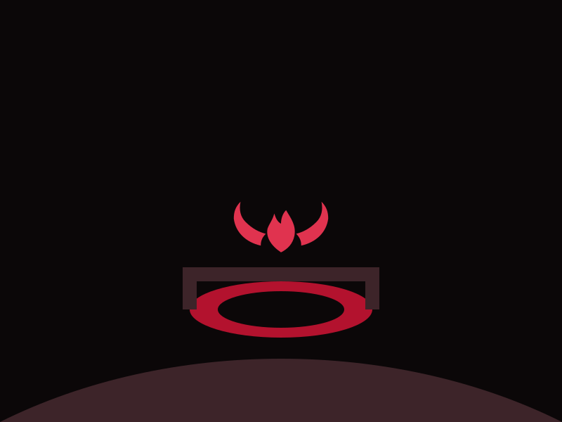

The brick
Thirty feet of it, laid tight, the mortar scratched with initials. He finds his own from 1993 and does not remember making them.
Chapter two, downward
Tobin Marrow has forty minutes, ninety feet of rope, a lamp he does not trust, and a hum in the ground that he has decided not to believe in until he is standing on it.
A well is a stair with the steps taken out. You go down it the same way, only faster.
Tobin Marrow, at the lip

The well
The rim is red brick, the shaft is limestone, and the bottom is whatever the men who built the tower put there before they built it. Tobin has the rope round his waist and Idris Vane on the windlass, and the two of them have agreed not to talk about the heat coming up.
Now read the ascentThirty feet of it, laid tight, the mortar scratched with initials. He finds his own from 1993 and does not remember making them.
The shaft widens and the hum has a direction now: not below, but all round, in the rock. At sixty feet he puts his palm flat on it and the lamp flame leans.
Not earth. Bronze, curved, and warm, and the size of the shaft exactly. He is standing on a second bell, and it is the one that is ringing.
Counts the turns aloud so Tobin can hear a voice. Loses count at forty and starts again from forty, which Tobin notices and says nothing about.
Left no record of what they buried, only the tower over it and a line in the parish book: the second is set, and the first shall keep it. Nobody in Corren has read the parish book in a century.
No name, no date, no clapper. It rings from the outside in, when the ground moves, and the ground has been moving since the fair began.
He does not want knee advice. He would like to know if anyone else's town is built on top of something.